You can use this section and Quick Reference section as a kind of dictionary explaining fundamental concept of various signaling components.
Topics described here are as follows and more topics will be added.
- Overal LTE Sequence
- Fundamental Information
- Initialization Sequence
- Frequency Aquisition
- Time Sync Process
- Cell ID Detection and System Information Detection
- SIB Scheduling
- Cell Selection
- Multi Cell - Multi RAT
- Random Access
- Uplink Data Transmission Scheduling - Persistent Scheduling
- Uplink Data Transmission Scheduling - NonPersistent Scheduling
- Decoding Uplink Signal
- HARQ Process Overview
- Downlink Data Transmission Process (HARQ ACK/NACK)
- Channel Coding Processing for DL SCH/PCH/MCH
- Channel Coding Processing for PUSCH
- Physical Channel Processing
- Precoding
- MIMO(Multiple Input Multiple Output)
- Integrity Protection Process
Most of us would be specialized in one or a few specific area/layer as an engineer. Technically it is understandable because not a single person can master everything, but I strongly recommend you to try to have some big picture of the whole process. Whenever you have some issues or something for you to work, try to ask your self "Where is the current issue located in the whole picture ?".
You don't have to try rote memorization for these whole process, but if you keep trying to map your current issues to specific parts within the whole picture, these whole sequence would automatically pops up in your memory. I say so often to my kid or my juniors "Don't try to memorize it, just repeat it until you automatically recall" (They are looking at me seeminly saying "What is the difference ?" -:) I just smile -:).
Following is my version of the whole LTE procedures.. but if you are trying to describe it, you would have a little bit different version.. but I think overall logic would be similar. Every now and then, just try to recall these sequence in your mind and ask your self "how in detail I can explain about each of these steps ?". Actually each of these steps can be described in a volum of a thick book.
i) UE is Off
ii) Power On UE
iii) < Frequency Search >
iv) < Cell Search > : Normally a UE would find multiple cells in this process
v) < Cell Selection >
vi) MIB decoding
vii) SIB deconding
viii) < Initial RACH Process >
ix) < Registration/Authentication/Attach>
x) <Default EPS Bearer Setup >
xi) Now UE is in IDLE Mode
xi) <(If the current cell become weak or UE moves to another cell regisn) Cell Reselection>
xii) <(When Paging message comes or User make a call) RACH Process>
xiii) < Setup Dedicated EPS Bearer >
xiv) Receive data
xv) Transmit data
xvi) (If UE power is percieved too weak by the network) Network send TPC command to increase UE Tx Power
xvii) (If UE power is percieved too strong by the network) Network send TPC command to decrease UE Tx Power
xviii) < (If UE moves to another cell region) Network and UE perform Handover procedure >
xix) User stop call and UE gets into IDLE mode
UE Capability : UE Category, Frequency Band, Sync Signal Sequence, General Radio Resource Info, General MIMO Parameter, Duplex Mode, Preamble sequence generation algorithm
SIM : Network Operator's PLMN list, Subscription Information
Stored Information : Most recently used frequency band, PLMN, Tracking Area Code, Cell ID, S-TMSI, InterRAT Frequency Band
Information that UE needs to get: Frequency and Timing Synchronization info, System Bandwidth, Number of MIMO Antennas, Identities (C-RNTI, Physical Cell ID, Tracking Area Code), Network PLMN, Signaling & Traffic Radio Resouce, RACH_ROOT_SEQUENCE & PRACH Config.
i) Power-Up Test
ii) Frequency & Time and Frame Synchronization
iii) Decode System Information Message
iv) Select Prefered Network
v) Perform RACH Process
vi) RRC Connection Setup
i) Search the center frequency by searching DC part
ii) Depending on UE PHY protocol stack implementation, UE may measure RSSI and determine whether it goes to next step or not.
iii) Decode BCH which occupies 62 subcarriers (6 RBs) at the center frequency.
iv) BCH tells the frequency information of the system (eg. System Frequency Bandwidth)
i) UE decode Primary sync with three different Primary Sync Sequence and figure out which sequence is assigned for the cell and abtain the primary time sync as well.
ii) Apply the primary sync sequence with the Secondary Sync code and figure out which sequence is assigned for the cell.
This Sync detection is done every 5 ms. (You will understand this time interval if you look at the LTE Downlink frame structure explained at DL FrameStructure section)
As I mentioned in previous section, three different sequences are used as the primary sync signal and there is a one-to-one mapping between each of the three sequences and the cell ID within the cell identity group. After a UE detect this cell-identity group, it can determine the frame timing. From this cell identity group, the UE also figure out which pseudo-random sequence is used for generating the reference signal in the cell.
iii) Once this timing sync get established, UE can decode MIB and figure out SFN number since MIB carries SFN number.
Cell ID Detection and System Information Detection
i) Frequency Aquisition
ii) Primary Sync Signal Aquisition (Slot Timing Aquired, Secondary Sync Signal Scrambling Code Aquired)
iii) Secondary Sync Signal Aquisition (Frame timing Aquired, Cell Group ID sequence aquired)
iv) with PSS and SSS, Cell ID can be calculated
v) with Cell ID, Reference Signal Location is detected
vi) If Reference Signal Location is properly decoded, PBCH (MIB) can be detected
vii) From MIB, SFN and System BW can be detected
viii) Decode PCFICH and detect how many symbols are allocated for PDCCH.
ix) Decode DCI for SIB1 from PDCCH
x) Decode SIB1 and get the scheduling information for other SIBs
xi) Decode SIBs (other than SIB1)
One of the most important step for testing/troubleshooting around the initial registration is to check whether UE successfully complete the time-sync (step i) and ii)), but it is very hard to check this step with any kind of equipment. One way to easily check whether UE succeeded in time-sync or not is to check from UE log whether UE successfuly decoded Cell ID or not. If UE successfully detected Cell ID, it means UE successfully completed the time-sync.
In LTE, MIB, SIB1, SIB2 is mandated to be transmitted for any cells. Since many of the SIB are transmitted, it should be transmitted in such a way that the location (subframe) where a SIB is transmitted should not be the same subframe where another SIB is transmitted.
Overall SIB Scheduling concept is as follows. As you see
i) MIB is transmitted at a fixed cycles (every 4 frames starting from SFN 0)
ii) SIB1 is also transmitted at the fixed cycles (every 8 frames starting from SFN 0).
iii) All other SIB are being transmitted at the cycles specified by SIB scheduling information elements in SIB1

You may notice that LTE SIB1 is very similar to WCDMA MIB.
Especially at initial test case development, you have to be very careful about item v). If you set this value incorrectly, all the other SIBs will not be decoded by UE. And as a result, UE would not recognize the cell and show "No Service" message.
According to 36.331 section 5.2.1.2, the SIB1 scheduling is as follows :
The SystemInformationBlockType1 uses a fixed schedule with a periodicity of 80 ms and repetitions made within 80 ms.The first transmission of SystemInformationBlockType1 is scheduled in subframe #5 of radio frames for which the SFNmod 8 = 0, and repetitions are scheduled in subframe #5 of all other radio frames for which SFN mod 2 = 0.
This means that even though SIB1 periodicity is 80 ms, different copies (Redudancy version : RV) of the SIB1 is transmitted every 20ms. Meaning that at L3 you will see the SIB1 every 80 ms, but at PHY layer you will see it every 20ms. For the detailed RV assignment for each transmission, refer to 36.321 section 5.3.1 (the last part of the section)
The transmission cycles for other SIBs are determined by schedulingInfoList in SIB2 as shown in the following example (This example is the case where SIB2 and 3 are being transmitted).
+-schedulingInfoList ::= SEQUENCE OF SIZE(1..maxSI-Message[32]) [2]
| +-SchedulingInfo ::= SEQUENCE
| | +-si-Periodicity ::= ENUMERATED [rf16]
| | +-sib-MappingInfo ::= SEQUENCE OF SIZE(0..maxSIB-1[31]) [0]
| +-SchedulingInfo ::= SEQUENCE
| +-si-Periodicity ::= ENUMERATED [rf32]
| +-sib-MappingInfo ::= SEQUENCE OF SIZE(0..maxSIB-1[31]) [1]
| +-SIB-Type ::= ENUMERATED [sibType3]
+-tdd-Config ::= SEQUENCE OPTIONAL:Omit
+-si-WindowLength ::= ENUMERATED [ms20]
One thing you would notice that sib-MappingInfo IE in the first node is not specified, but the first entity of schedulingInfoList should always be for SIB2 as specified in the 36.331 as follows (See 36.331 SystemInformationBlockType1 field description).
List of the SIBs mapped to this SystemInformation message.There is no mapping information of SIB2; it is always
present in the first SystemInformation message listed in the schedulingInfoList list.
Understanding overall cycle in the unit of Subframe number is pretty straightforward to understand. But understanding exactly at which subframe a SIB should be transmitted is not that straightforward as you might think. It is related to 'si-WindowLength'. si-WindowLength tells that a SIB should be transmitted somewhere within the window length starting at the SFN specified by si-Periodicity. But this parameter does not specify the exact subframe number for the transmission.
The subframe for a specific SIB transmission is determined by a algorithm defined in 36.331 5.2.3 Acquisition of an SI message as follows.
When acquiring an SI message, the UE shall:
1> determine the start of the SI-window for the concerned SI message as follows:
2> for the concerned SI message, determine the number n which corresponds to the order of entry
in the list of SI messages configured by schedulingInfoList in SystemInformationBlockType1;
2> determine the integer value x = (n – 1)*w, where w is the si-WindowLength;
2> the SI-window starts at the subframe #a, where a = x mod 10, in the radio frame for which SFN mod T =
FLOOR(x/10), where T is the si-Periodicity of the concerned SI message;
NOTE: E-UTRAN should configure an SI-window of 1 ms only if all SIs are scheduled before subframe #5 in
radio frames for which SFN mod 2 = 0.
1> receive DL-SCH using the SI-RNTI from the start of the SI-window and continue until the end of the SI-window
whose absolute length in time is given by si-WindowLength, or until the SI message was received, excluding the
following subframes:
2> subframe #5 in radio frames for which SFN mod 2 = 0;
2> any MBSFN subframes;
2> any uplink subframes in TDD;
1> if the SI message was not received by the end of the SI-window, repeat reception at the next SI-window occasion
for the concerned SI message;
When you power on the mobile device, in most case the device is under a circumstance where it sees many base station (eNode B) around it. In some cases UE would be surrounded not by the multiple basestation from one system operator but by the multiple basestation from multiple system operators.
Out of those many basestation, UE can camp on (register) to only one base station. Then the question is which specific single basestation the UE have to register. For this UE goes through a specific decision making process to pick up a specific base station (cell) to register, this specific decision making process is called 'Cell Selection'.
Overall description of cell selection process is described in 36.304 Figure 5.2.2-1: RRC_IDLE Cell Selection and Reselection as follows. Of course the minimum condition is to meet Cell Selection Criterion .
Pretty complicated flow diagram, right ? But you will find it even more complicated if you try to associate this flow to the situation you come across when you test the device in real life. You see in this flow diagram many branches and loops which makes it difficult to follow the right path and other thing is that it is not so easy to figure the exact status of the UE when you turn on the UE.
Let me give you some examples in which UE needs to go through the cell selection process. To be honest, I don't know exact answer to the cases that I would give you here.
i) You got a new phone from the shop and just inserted the USIM and power on the device.
ii) You have been using a phone for a while, and power it off and then power on.
iii) You have been using a phone for a while and switch it to Airplan mode and then switch back to the normal mode.
iv) You have been using a phone for a while and switch it to Airplan mode and flew into another country and then switch back to the normal mode.
v) You just turned on a phone and turn it off right away in the middle of registration and then turned it on.
vi) Turned off the phone you have been using and pull out the battery and then put the battery back and turn it on.
vii) Turned off the phone you have been using and pull out the battery, pull out the USIM and put a new USIM in and then put the battery back and turn it on.
viii) Turned of the phone you have been using and leave it off for several days and then turn it on.
ix) Turned of the phone you have been using and take out the USIM, and then turn it on without USIM.
Can you mark the path on this flow diagram for each of the cases listed above ? To be honest, I may be able to do it only a couple of the case and not for all.
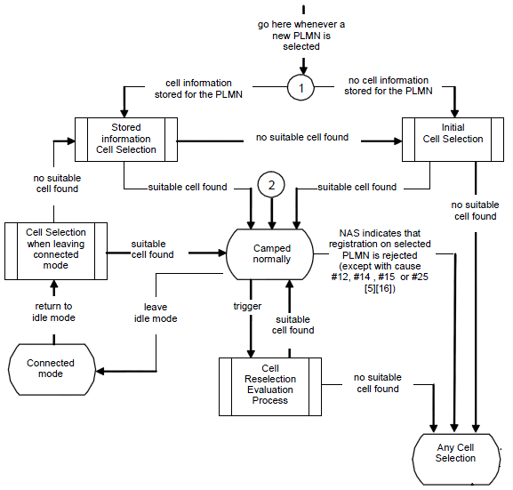
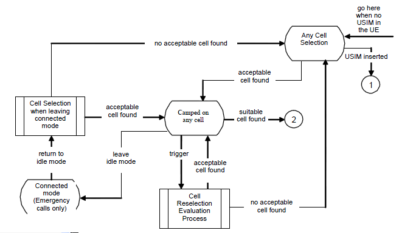
I may summarize the interaction between multiple Cells in LTE and between LTE and other technology as shown in the following illustration. This may be oversimplified the process but I think it can give you some intuitive understanding about the multi cell, multi RAT interaction between LTE and other technology. (But it would take pretty long time and effort to understand the full details even for a single arrow.)
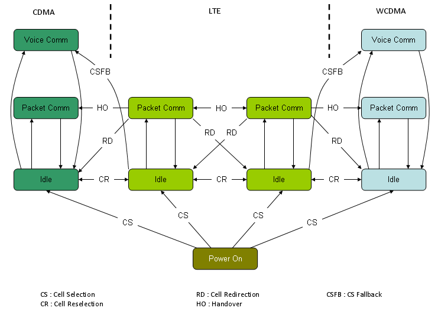
Random Access process plays two main roles - establishment of uplink synchronization and establishment of a unique UE ID (C-RNTI) known to both the network and the UE.So Random Access is used not only for initial access, but also after periods of uplink inactivity when uplink sync got lost in LTE_ACTIVE states.
i) UE initiate a Random Access Procedure on the (uplink) Random Access Channel (RACH).(The location of RACH in the frequency/time resource grid the RACH is known to the mobile via the (downlink) Broadcast Channel (BCH). The random access message itself only consists of 6 bits and the main content is a random 5 bit identity)
ii) Network sends a Random Access Response Message(RARM) at a time and location on the Physical Downlink Shared Channel (PDSCH) (The time and location of RARM on PDSCH can be calculated from the time and location the random access message was sent. This message contains the random identity sent by the device, a Cell Radio Network Temporary ID (C-RNTI) which will be used for all further bandwidth assignments, and an initial uplink bandwidth assignment)
iii) The mobile device then uses the bandwidth assignment to send a short (around 80 bits) RRC Connection Request message which includes it's identity which has previously been assigned to it by the core network
Only the step i) uses physical-layer processing specifically designed for random access. The remaining steps utilizes the same physical layer processing as used for normal uplink and downlink data transmission.
For more detailed explanation about this procedure, refer to http://www.sharetechnote.com/html/RACH_LTE.html
Uplink Data Transmission Scheduling - Persistent Scheduling
There are a couple of Data Transmission Scheduling Scheme in LTE. The most simple in terms of algorithm would be the persisent scheduling. In this scheduling mode, Network send 'Grant' in DCI Format 0 for every subframe.
i) Network send the first data on DL PDSCH and PDCCH which has DCI format 1 for DL Data Decoding and DCI format 0 for UL Grant. (If there is no downlink data to be transmitted, network transmits only DPCCH with DCI format 0 without any DPSCH data)
ii) UE decode PCFICH to figure CFI value.
iii) UE decode PDCCH and get the information on DCI format 1
iv) Based on DCI format 1, UE decode DL data.
v) UE decode the information on DCI format 0 from PDCCH
vi) UE send ACK/NAK for DL data through UCI (UCI will be carried by PUCCH)
vii) UE check the Grant field.
viii) If Grant is allowed, UE transmit the uplink data through PUSCH
ix) Network decode PUSCH data and send ACK/NACK via PHICH
x) UE decode PHICH and retransmit the data if PHICH carries NACK
Overall flow can be illustrated as follows. This diagram would not show all the details but give you the big picture for the procedure.
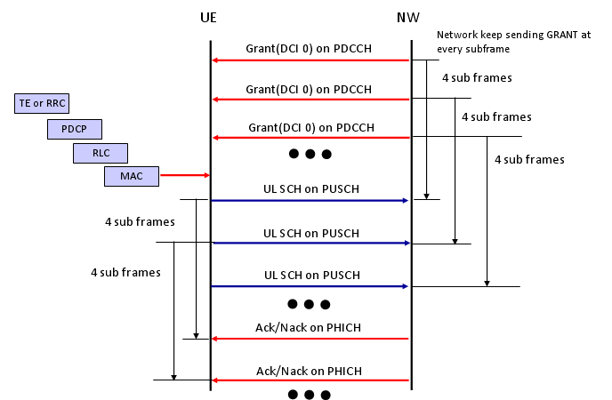
For detailed data structure of DCI Format 0, refer to TS 36.212 section "5.3.3.1.1 Format 0"
The process listed above is in reality a pretty complicated process and need a lot of troubleshoot and debugging. So in case of development and testing phase, we normally break down this process into multiple simple/small procedure and verifies it step by step.
Step 1 : DL data reception and no ACK/NACK transmission ==
a) Network send PDCCH and PDSCH data
b) See if UE properly decode PDSCH data
This would seem to be very simple two step process, but to make this happen UE is capable of doing step ii), iii), iv) described above.
Step 2 : DCI format 0 reception ==
a) Network send DCI Format 0(UL Grant) without PDSCH transmission
b) See if UE properly decode DCI Format 0 (You need to make it sure that Resource allocation that UE decoded matches with DCI format 0 sent by network.)
Step 3 : PUSCH transmission based on DCI format 0 ==
a) Network send DCI Format 0(UL Grant) without PDSCH transmission
b) UE transmit UL Data on PUSCH
c) Network decode PUSCH data
d) see if the data decoded at Network side maches what UE transmit
To make this happen, UL DMRS for PUSCH should have been properly implemented and you have to make it sure that UE transmit the PUSCH data on the RBs that DCI format 0 specified.
Step 4 : DL data reception and ACK/NACK transmission ==
a) Network send PDCCH and PDSCH data
b) UE decode PDSCH data
c) UE has to transmit ACK/NACK accordingly
Step 5 : UL data transmission and ACK/NACK reception ==
a) Network send DCI Format 0(UL Grant) without PDSCH transmission
b) UE transmit UL Data on PUSCH
c) Network decode PUSCH data
d) Network send ACK/NACK on PHICH
e) UE has to decode ACK/NACK properly
f) UE has to retransmit the data if it gets NACK
Uplink Data Transmission Scheduling - Non Persistent Scheduling
In Persistent Scheduling mode, UE can send the data to Network anytime since Network is sending UL Grant all the time. But what if Network does not send UL Grant all the time ? In this case, UE has ASK the network to send UL Grant (DCI 0). If network send UL Grant, then UE can send UL data as allowed by the UL Grant.
Overall procedure is as follows :
i) UE send SR (Scehduling Request) on PUCCH
ii) Network send UL Grant (DCI 0) on PDCCH
iii) UE decode DCI 0 and transmit PUSCH based on the RBs specified by DCI 0
iv) Network decode the PUSCH
v) Network send ACK/NACK on PHICH
vi) If Network send NACK, go to step i)

'Decoding Uplink Singal' means 'decoding PUCCH and PUSCH'. Overall Procedure is as follows :
i) UE transmit PUSCH (or PUCCH) to eNodeB
ii) eNodeB detect DMRS (DeModulation Reference Signal)
iii) if DMRS detection is successful, eNodeB decode PUSCH (PUCCH) data
Overall logic is simple, but eNodeB normally get Uplink signal from multiple UEs and each of the UE may be in different distance and under different channel condition. So docoding uplink channel would not be easy. To help eNodeB decode these uplink channel, UE transmit a reference signal.
There are a few different uplink signal as listed below.
i) DMRS (DeModulation Reference Signal) for PUCCH
ii) DMRS (DeModulation Reference Signal) for PUSCH
iii) Sounding Reference Signal.
Item iii) would not be a mandatory component, but UE must send item i) and ii). Otherwise, eNodeB fail to decode PUCCH or PUSCH even though UE transmit it in proper format.
Detailed implementation of UL reference signal is described in TS 36.211 section 5.5 and TS 36.213. You will notice a lot of parameters are involved in UL reference signal generation and the following is brief list of these parameters.
* n_1_pucch : N(1)PUCCH described in 3GPP TS36.213
* GroupHopping : 5.5.1.3 in TS36.211
* Cell ID :
* Pucch format : 5.5 in TS36.211
* N_1_CS :
* N_2_RB :
* delta Pucch shift :
* RNTI :
* UL CP Configuration :
* systemBW :
* u_even : sequence-group number even slot (TS36.211 5.5.1.3)
* u_odd : sequence-group number odd slot (TS36.211 5.5.1.3)
* n_cs_even#0~#6 : Cyclic Shift for even slot in a subframe (TS36.211 5.4.1, 5.5.2.2.1)
* n_cs_odd#0~#6 : Cyclic Shift for odd slot in a subframe (TS36.211 5.4.1, 5.5.2.2.1)
* n_oc_bar_even : orthogonal sequence for even slot in a subframe (TS36.211 5.5.2.2.1)
* n_oc_bar_odd : orthogonal sequence for odd slot in a subframe (TS36.211 5.5.2.2.1)
* n_oc_even : orthogonal sequence for even slot in a subframe (TS36.211 5.4.1)
* n_oc_odd : orthogonal sequence for odd slot in a subframe (TS36.211 5.4.1)
* n_PRB_even : Physical resource block number for even slot in a subframe (TS36.211 5.4.3)
* n_PRB_odd : Physical resource block number for odd slot in a subframe (TS36.211 5.4.3)
As you notice, quite a lot of parameters are involved and it is not easy to understand all of these in detail, but at the initial phase of chipset development or when you try to duplicate live network environment with network simulator you have to make it sure that all of these parameters are properly setup not only in UE but also in network simulator.
Can UE set these parameters arbitrarily whatever it likes to do ? No.. in that case eNode B would not know how to detect the reference signal and in result eNode B would not be able to decode PUCCH/PUSCH. Then how UE can know which value it has to use for Uplink Reference Signal Creation ?
The most critical information on UL Reference Signal is tranmitted by SIB2 message and there are different parameters are involved in PUCCH reference signal detection and PUSCH reference signal detection :
Following is the list of IEs related to PUCCH reference signal detection.
* radioResourceConfigCommon.pucch_ConfigCommon.deltaPUCCH_Shift
* radioResourceConfigCommon.pucch_ConfigCommon.nRB_CQI
* radioResourceConfigCommon.pucch_ConfigCommon.nCS_AN
* radioResourceConfigCommon.pucch_ConfigCommon.n1PUCCH_AN
Following is the list of IEs related to PUSCH reference signal detection.
* radioResourceConfigCommon.pusch-ConfigCommon.ul-ReferenceSignalsPUSCH.groupHoppingEnabled
* radioResourceConfigCommon.pusch-ConfigCommon.ul-ReferenceSignalsPUSCH.groupAssignmentPUSCH
* radioResourceConfigCommon.pusch-ConfigCommon.ul-ReferenceSignalsPUSCH.sequenceHoppingEnabled
* radioResourceConfigCommon.pusch-ConfigCommon.ul-ReferenceSignalsPUSCH.cyclicShift
HARQ(Hybrid ARQ) is pretty complicated process and not easy to understand in very detail, but it would be helpful if you have some big picture of this process. (Describing this process in very detail would not be the scope of this section.)
Let's first think about the terminology. What is H-ARQ ? Why it uses the term "Hybrid" ?
First think about the term ARQ. ARQ stands for Automatic Repeat Request and you would have heard this a lot if you had experience of studying IP communication (I think you can google a lot of tutorials on this, so I would not explain about what is ARQ here). The "H" in HARQ means "Hybrid" which implies that HARQ is a combination of "Something" and "ARQ". Then what would be the "Something" ? The "Something" is FEC (forward error correction). FEC is also not LTE specific technology and a kind of generic error correction mechanism. So I would like you to google something about FEC.
A little bit different mode of HARQ process is used depending on whether it is for FDD or TDD and whether it is for Uplink and Downlink. But I will talk only about FDD case.
In FDD, we are using 8 HARQ process.
i) For Downlink
a) it can use the 8 HARQ processes in any order (Asynchronous Process).
b) UE does not know anything about HARQ process information for DL data before it gets it. So Network send these information (Process ID, RV) in PDCCH (DCI, Refer to DCI section of this site).
ii) For Uplink
-
UE do "Adaptive retransmission" if it detect DCI 0 and NDI is not toggled. (In this case, UE does not care about "HARQ feedback (PHICH)", it retransmit based on DCI 0 information).
-
UE figures out that it is using "Non-Adaptive retransmission" if it got "HARQ feedback (PHICH=NACK)" but does not get DCI 0.
a)it have to use the specific process in a specific subframe (Synchronous Process). UE has to use the same HARQ process number every 8 subframes.
b) Since UE have to use specific HARQ process ID at specific subframe, the reciever (eNode B) knows exactly which HARQ process comes when. And eNodeB can also knows about RV because UL Grant (DCI 0) from eNodeB can specify RV using MCS field.
c)it has two mode of operation : Adaptive and Non-Adaptive HARQ
Following is an example of Adative UL HARQ Process (Key idea is that Each UL retransmission uses different RV and the RV is determined by DCI 0).

Following is an example of Non Adative UL HARQ Process (Key idea is that Each UL retransmission uses different RV and the RV is determined by predefined sequence specified in TS36.321 "5.4.2.2 HARQ process").
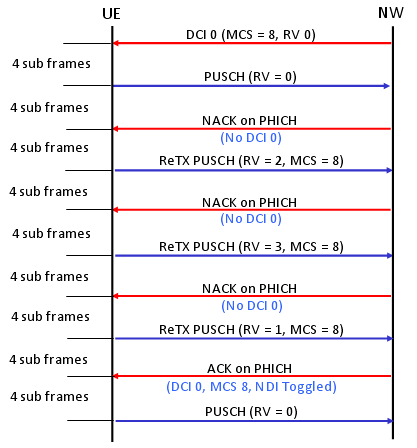
The last but very important question would be "How UE knows if it is supposed to do Adaptive retransmission and Non-Adaptive retransmission ?"
Downlink Data transmission Process
i) Network High Layer ( RRC or TE) -> Lower Layer : Transmit the data toward the lower layer.
ii) Network -> UE : Transmit the data via PDSCH
iii) UE receive PDSCH data
iv) UE checks CRC error for the PDSCH data
v) Now we have two cases at this point,
a) If UE has some data to transmit to the network, UE send the result of CRC check(ACK/NACK) via PUSCH
b) If UE does not have any data to transmit to the network, UE sends the result CRC check via PUCCH
vi) Network receives CRC check result from UE and do one of the following steps.
a) If it receives ACK, Network transmit the next data (new data)
b) If it receives NACK, Network HARQ process retransmit the exisiting data (with different revision)
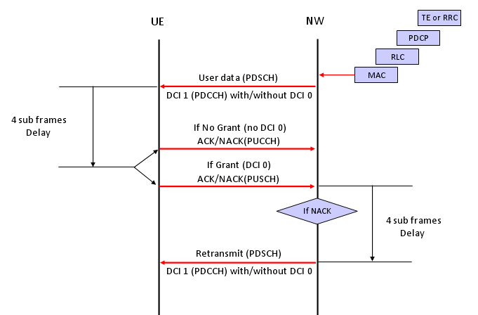
Channel Coding Processing for DL SCH/PCH/MCH
First as a disclaimer, I am very early stage of studying this field. For a long time since I joined into the wireless communication, this kind of processing has always the part that I was so eager to undersand but eventually gave up. In LTE as well, the document like 36.211, 36.212 were mysterious specification to me. I have always wondering "How those guys can implement real device(PHY) just by reading these thin, vague, cloudy (at leas to me) documents ?".
Very recently an expert in this area helped me so much to get some insight/big picture to start with. (I still think several month to go to be able to draw detailed picture for this, but getting the initial big picture would be the most important step).
Here goes my first picture and this will get more detailed illustration later... so keep checking this part if you are interested.
The first picture you have to be familiar (don't try to memorize... just see this as often as possible and just make it familiar) . This figure is from 36.212.
Let's just make a two important bulets here. Whatever a processing unit is, the first and most important steps you have to understand is "What is the input ?" and "What is the output ?".
What is the input of this whole process ? It is a transport block.
What is the output of this whole process ? It is a series of IQ data to be transmitted from PHY.
So the whole purpose of this process is "to convert a transport block (from MAC) into a series of bit stream data to be transmitted".
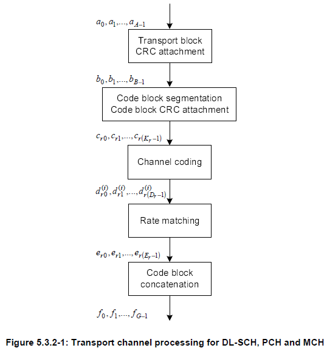
Now let's look into each step of the process.
The first step is pretty simple. Just adding 24 bits of CRC block to the end of the input (transport block).
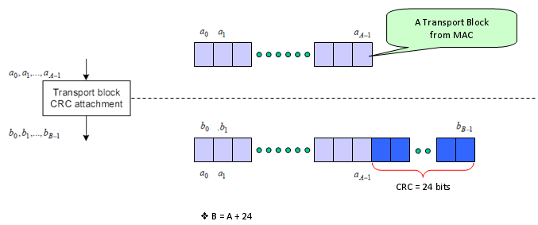
The second step is as follows. It is splitting the big transport block into multiple small blocks and add another CRC to each of the split chunks. Sounds simple ? but there is a couple of things to make it tricky. Why do we need to split the block ? Do we always to have to split the input block ? It would be understandable to split a very large input block into multiple smaller block, but if we have to split even a small input block, isn't it inefficient ?
The generic answer is that the process split the input block only when the block is very large.
Then the question is "How large it would be to be splitted ?" In LTE case, 6144 (bits) is the number. (See 5.1.2 Code block segmentation and code block CRC attachment of 36.212)

Next step is the famous Turbo Coding step. I am not able to explain on how turbo coding works in easy/plain language mainly because I don't understand it clearly. But for now, let's just focus on only one fact. If you see the turbo coding block diagram in 36.212. You would see that one bit input become 3 bit output as it goes through the turbo coding processor (It means the coding rate is 1/3). In this process, one input row generate three rows of output as follows.
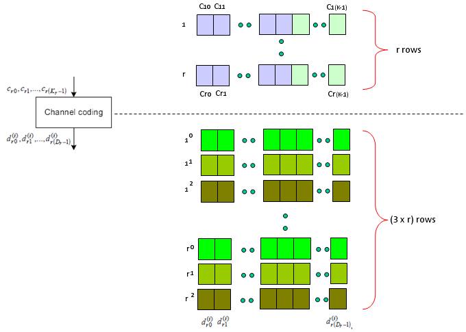
Next step is Rate Matching step. This is the most mesterious part to me. The generic Idea is like this. I said Turbo coding generate three rows of output for each row of input. In this rate matching process, the each set of three rows of input stream became one row of bit stream. The question is "How to convert the a set of three row into one row ?" Is it just by concatenating the three row into one long row ? Is it just random mix of the three row ? Is it by interleaving the three row into one ?".
This is the question you have to find the answer from 5.1.4.2 Rate matching for convolutionally coded transport channels and control information of 36.212. Good luck with your endeaver -:) I think it will take a couple of month for me to understand this even with a good tutor around me.
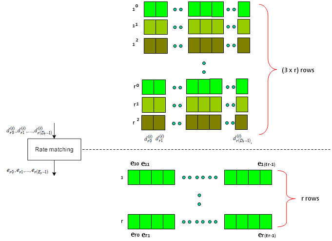
Just adding another big picture to this rate matching step, take a quick look at the following figure from 36.212. You see the three lines of Turbo coding output gets into this rate matching block and comes out as a single line of bit stream. Our goal is to understanding the detailed process of "interleaving", "BitCollection", "Bit Selection and pruning" procedure.

Next is the last step which is relatively simple. Combine the multiple rows of imput into one long bit stream as shown below.

Now you may have a question. Is this the end of the process ? Are these data get directly transmitted out of the antenna ? Unfortunately No. The output of this complicated process become the input (starting point) of another complicated process as shown below. I means there are a lot of stuffs you have to study pulling the hair -:)
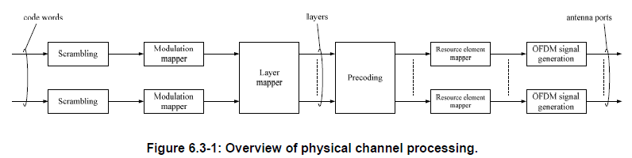
Channel Coding Processing for PUSCH
This is the process that convert the bit stream coming out of channel encoding process into radio frame data to be transmitted by each antenna.
Overall flow is as shown below and I put the 3GPP specification for each steps. This process is also the one that would be very difficult to understand in very details unless you follow each steps of the procedure written in the specification. But this process is described in a very short mathematical format and it is hard to describe in other way without losing the clarification.
In this section, I would like you to grasp the basic idea of each step.
At lower part of the diagram, I labeled the data format of each step. If you follow those labels, you would know at which steps bit stream is being handled and at which steps I/Q data is handled etc.

One good way for you to study this procedure would be to classify the procedure into several specific cases like SISO, Diversity, 2x2 MIMO etc and mark the path for each case as shown below.
Video Tutorial : http://www.youtube.com/watch?v=u5lStqUlMgU&feature=related
< SISO >
As shown below, marked in red/blue arrow, only one codeword (transport block) comes into the process and directly goes to the antenna. In this case, layer mapper and Precoding steps do almost nothing.
< Tx Diversity >
As shown below, marked in red/blue arrow, only one codeword (one transport blocks) comes into the process and split into two stream (layers) by the layer mapper and finally go out through the two antenna.

< 2 x 2 MIMO >
As shown below, marked in red/blue arrow, two codewords (two transport blocks) comes into the process and goes through the layer mapping without any modification and finally go out through the two antenna. In this case, data goes through very complicated precoding process. As described in the specification, there are three sub steps of procoding process as specified in 36.211 6.3.4.2.1, 36.211 6.3.4.2.2, 36.211 6.3.4.2.3. Depending on whether the 2 x 2 MIMO is Closed Loop Mode or Open Loop Mode, the different combination of the substeps are applied.

Unfortunately I don't know how to explain this part in plain language without using any mathematical tools.
As you see in the following diagram, Precoding is the process that is between Layer Mapper and Resource mapper. In practice, this precoding is the process that rearrange the IQ constellation into the form that can maximize the throughput to the multiple reciever antenna.

To make the process and understanding simpler, let's assume that we are only focusing on two antenna case. If it is two antenna case, the block diagram around the Precoding looks as follows. (TM4 is using this configuration)
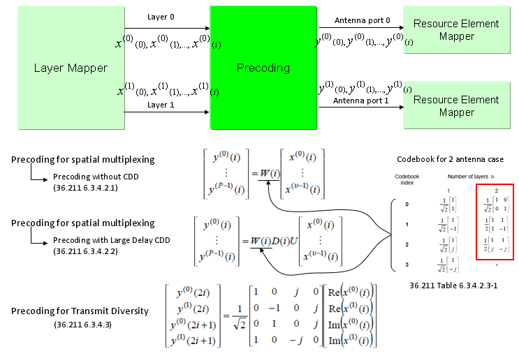

The only way to understand this concept to the skin would be to try this yourself and play with all these parameters like your toys. To help this, I created a small octave code and attached here. (I create this code in Octave which is a Matlab like GNU program, but I guess it will run in Matlab without any modification. I tried to write the code so that I can run on both program but I haven't tested it in Matlab myself).

Note : If I expand the transformation shown above into a 2 x 2 case to give you more concrete idea, it can be illustration as follows. Since all of the data used here are complex numbers (Real = I, Imaginary = Q), the result of operation may not be so intuitive to you. If you are really interested in understanding the result of transformation, try this transformation with your own program or pen-paper calculation on your own. At least, play with the matlab code that I created and linked here.
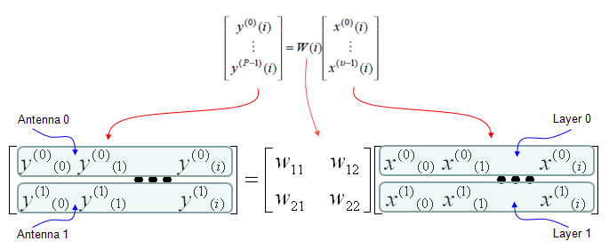
Following is the real Downlink signal coming out of a LTE network emulator. I capture the signal and analyzed it with a vector spectrum analyzer with LTE analysis functionality.

Now let try apply the CDD. I would recommend you to try investigate on what's is CDD in practical sense and what would be the advantage of applying CDD. Here I would only show you the result of the CDD application. The Octave code is here. (I create this code in Octave which is a Matlab like GNU program, but I guess it will run in Matlab without any modification. I tried to write the code so that I can run on both program but I haven't tested it in Matlab myself).

Following is the case where a single layer data stream gets transmitted by two antenna. Overall procedure is as follows. (TM6 is using this configuration)

If we apply the Layer 1 code book to a sequence of data, we will get the constellation as follows. If you briefly see the constellation, you don't find any differences in terms of constellation except overall amplitude gets smaller after going through the precoding block. But if you following through the precoding process for each one (single) constellation, you will understand the differences.
The Octave code is here. (I create this code in Octave which is a Matlab like GNU program, but I guess it will run in Matlab without any modification. I tried to write the code so that I can run on both program but I haven't tested it in Matlab myself).
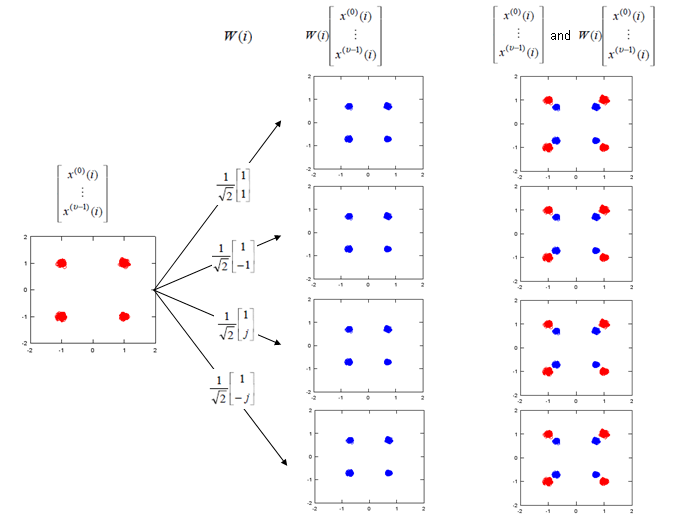
Note : If I expand the transformation shown above into two antenna case (diversity) to give you more concrete idea, it can be illustration as follows. Since all of the data used here are complex numbers (Real = I, Imaginary = Q), the result of operation may not be so intuitive to you. If you are really interested in understanding the result of transformation, try this transformation with your own program or pen-paper calculation on your own. At least, play with the matlab code that I created and linked here.
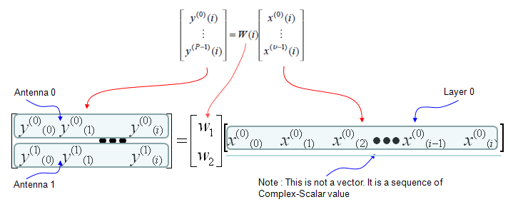
As I mentioned above, if you just see the overall constellation, you don't find any differences in terms of constellation except overall amplitude gets smaller after going through the precoding block. But if you following through the precoding process for each one (single) constellation, you will understand the differences. Following sequences of plots shows you 'Precoding' result of each points with each precoding (transformation) vector. Colored spots represents the constellation (I/Q data) coming(I/Q data) out of Layer Mapping block and coming into Precoding block. Black spots represents the constellation coming out of the Precoding block. You would notice that each of the colored spots creates two black spots. Even for the plot with only one black spots, it is the superimposed result of two black spots. Each of the black spots gets transmitted by each of the antenna.
The Octave code is here. (I create this code in Octave which is a Matlab like GNU program, but I guess it will run in Matlab without any modification. I tried to write the code so that I can run on both program but I haven't tested it in Matlab myself).
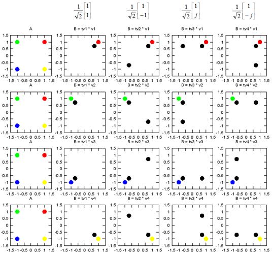
MIMO (Multiple Input Multiple Output)
I think everybody would know what MIMO is. Simply put, it is a technique to increase the data throughput by using multiple transmitter antenna and multiple reciever antenna. So.. overall concept is simple, but detailed process and implementation is not as simple as you may think. Unfortunately -:), it would be almost impossible to understand the details without going through underlying mathmatics. Actually math itself is not that complicated but interpreting the math and translate the math into real implementation is difficult. I hope my math section in this site would helpful on this. (Please see the Engineering Math - Matrix as you go along this section).
Try googling "MIMO introduction", "MIMO Tutorial" for general understanding . I will try to cover the math part here. I will use 2 x 2 MIMO in this section for simplicity.
In case of 2 x 2, overall data transmission process can be illustrated as follows. The red arrow and four blocks (h11,h12,h21,h22) between the two antenna is to illustrate the possible data path between the two Tx and two Rx antenna.
h11, h12,h21,h22 are special numbers (coefficient) to show how much of the data is going through each of the possible path. The greater the value is, the larger portions of data is being transmitted in that path. A matrix which is made up of these channel path coefficient is called "Channel Information Matrix". The reciever and transmitter relationship is represented as follows.

As I said the math itself is very simple. It would be like a first example at the first chapter of any linear algebra book. The important this is how to interpret this equation into real implementation. If I interpret it in an illustration, it would be as the path represented in green arrows. By this way, we can mathematically represent the recieved data (data distorted by the air path between transmitter and reciever antenna), but just calculating the recieved is not our goal (not the function of the reciever). Our goal is to extract/figure out the 'transmitted data (original data)'. Mathematically this is also simple and it is represented in green arrows.

As you see in the process illustrated in green arrow, to recover the transmitted data (original data) from the received data we need to take inverse of the channel information matrix. Unfortunately there are a couple of issues with this method.
i) Not all matrix is invertable. There are some matrix for which inverse matrix does not exists. (Please refer to Matrix section and see what kind of matrix is the one which is not invertable).
ii) Calculating the inverse matrix is not the simple process.
To workaround these problems, we change the channel information matrix into three matrices by the method called SVD(Singular Value Decomposition). See the SVD section in Marix page and clearly understand the meaning of this process. Probably my page would not be enough to give you full understanding about SVD. Google as much materials about this as possible and try to have some "Intuitive" understanding of the concept.
When we apply any mathematical technique in engineering area, it should be meaningful in the engineering sense and should be implementable. The meaning and implementation of SVD can be illustrated as follows.

The important point is that by implementing this method, we can express the channel information matrix as a simple 'diagonal matrix'. That diagonal matrix is expressed as follows and can be illustrated as follows. Isn't it look simple and clear ? -:)
For some MIMO implementation (e.g, TM4 in LTE = Closed Loop MIMO), you estimate the channel and select a specific precoding matrix and send it back to the receiver as shown below.

The algorithm by which UE select the codebook which is best fit for the channel at specific moment is as follows.

Once a specific codebook element (precoding matrix) is selected as shown here, that precoding matrix is used to transform the incoming bits as explained in Precoding section.
Integrity Protection Procedure
My perception of any process is "a black box that convert a set of inputs into a set of output". So for any process, I usually tries to define what is the inputs and out is the final outputs.. and then try to find the all of the steps one by one to convert the input into the outputs.
If I define LTE Integrity Protection Procedure with this logic, it would be "a process that convert 'K' value from USIM into PDCP MAC-I and NAS MAC(Message Authentication Code)". Describing this process with illustration would be as follows. Just try to go through this illustration whenever you have chance and try to have your own idea first.
The process described here apply only to C-Plane data. (Refer to 33.401 for the detailed description of each of the steps).